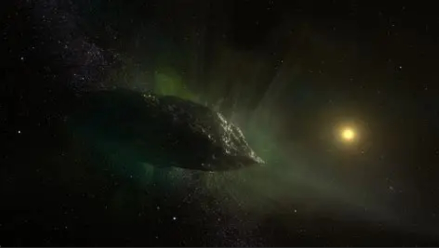

1I/Oumuamua is the first confirmed interstellar object to pass through the Solar System. Discovered on October 19, 2017, by the Pan-STARRS telescope, it was approximately 33 million kilometers from Earth at the time of its closest approach to the Sun on September 9, 2017. The object is estimated to be between 100 and 1000 meters long and has a red color, similar to object in the outer Solar System. Despite its close approach to the Sun, it showed no signs of a comet`s coma and exhibited non-gravitational acceleration, leading astronomers to conclude that it is likely of extrasolar origin.
2I/Borisov, originally designated C/2019 Q4 (Borisov), is the first observed rogue comet and the second observed interstellar interloper, after 1I/Oumuamua. It was discovered by the Crimean amateur astronomer and telescope maker Gennadiy Borisov on 29 August 2019 UTC (30 August local time) in MARGO Observatory.
2I/Borisov has a heliocentric orbital eccentricity of 3.36 and is not bound to the Sun. The comet passed through the ecliptic of the Solar System at the end of October 2019, and made its closest approach to the Sun at just over 2 AU on 8 December 2019. The comet passed closest to Earth on 28 December 2019. In November 2019, astronomers from Yale University said that the comet`s tail was 14 times the size of Earth, and stated, "It`s humbling to realize how small Earth is next to this visitor from another solar system."
